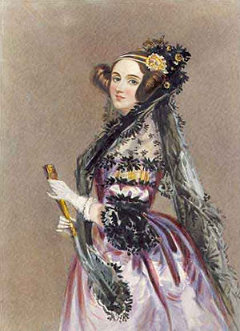

Nascida em 10 de dezembro de 1915, na cidade de Byron, Augusta Ada Byron King, foi a primeira pessoa a trabalhar na área que hoje chamamos de programação, ao escrever o primeiro algoritmo a ser executado pela máquina analítica de Babbage. Enquanto trabalhava com essa máquina, Ada escrevia as instruções que permitiam que fossem computadas funções matemáticas.
Desde pequena, Ada sempre teve muito interesse nas áreas da matemática e da lógica (devido a sua mãe), além da escrita (devido a seu pai).
Ada, devido a seu interesse em matemática, veio a se tornar colega e amiga do mátemáticos Charles Babbage. Em 1842/1843, após fazer a tradução de um artigo sobre a máquina de Babbage, ela anexou uma série de notas sobre esta, que incluiam um algoritmo para ser processado, considerado o primeiro programa de computador.
Hoje em dia, a linguagem de programação Ada possui seu nome em homenagem a ela.
